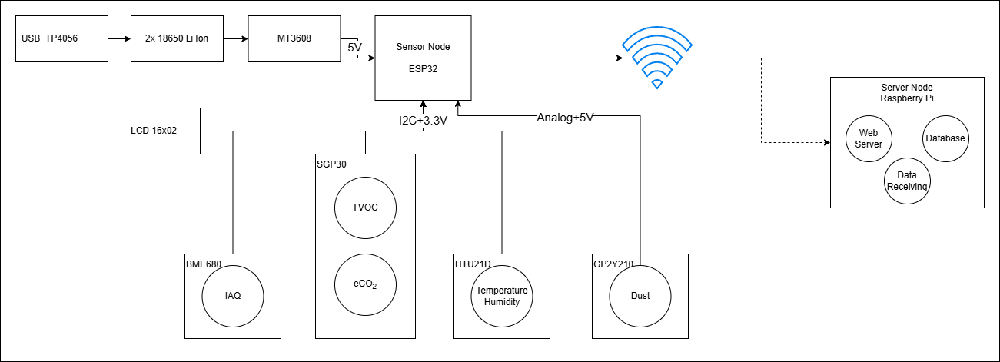
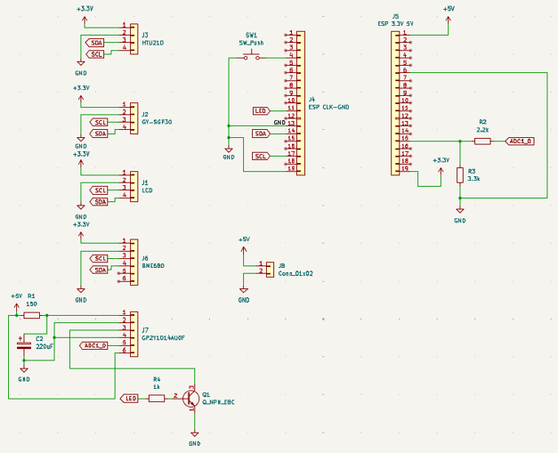
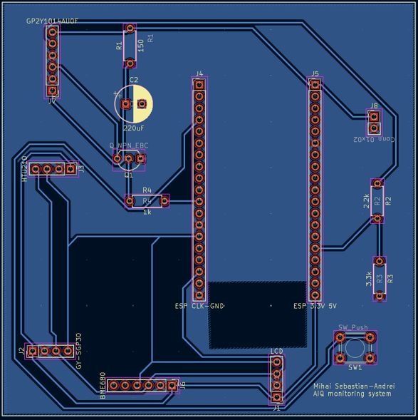

System Architecture

The sensor node is powered from a small battery pack. Two 18650 Li-ion cells are charged through a TP4056 module, and a MT3608 boost converter raises the voltage to 5V for the sensor electronics.
The main controller is an ESP32 board. It reads the IAQ and gas sensors over I2C, while the dust sensor uses an analog input. A small 16x02 LCD shows the current values directly on the unit.
The sensors used in this version are:
BME680 for indoor air quality and environmental data
SGP30 for TVOC and equivalent CO2 measurements
HTU21D for temperature and humidity
GP2Y210 for dust density


All readings are sent by WiFi to a Raspberry Pi server node. The Pi runs a web server, receives the incoming data, and stores it in a database so the dashboard can show the latest values and history.
I also built a simple MQTT backend so the ESP32 can send data live to a dashboard. The device keeps working even if WiFi drops by saving measurements locally and sending them later.

The schematic shows how all the sensors are wired to the ESP32 microcontroller. Each sensor has its own power regulation and connection path.

The PCB layout brings everything together on a compact board. All the components are arranged for easy assembly and good signal integrity.